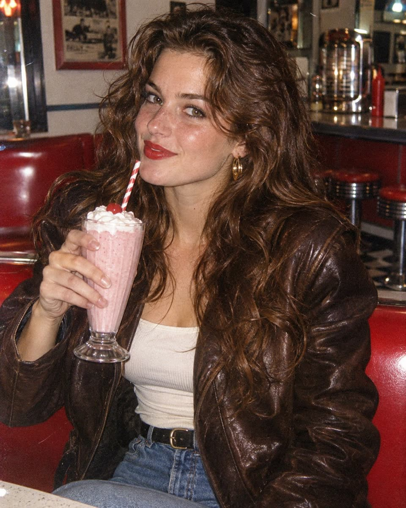

Candid 1990s disposable-flash film photo: a woman in a dark-brown leather jacket with a strawberry milkshake in a red vinyl diner booth
GRN-069Grain / FilterNot stated by the creator (image model)by @prompt2llife2026-11-08

A compact film-snapshot recipe: decade + medium first ("Ultra-realistic candid 1990s film photograph"), one clear outfit (dark-brown leather jacket, white top, blue jeans), one prop, one location, then the look in four words each: "direct disposable-camera flash", "realistic 35mm film grain", freckles and natural skin, warm nostalgic tones. The output nails the on-camera flash falloff and red-booth reflections. Good short template for retro diner/lifestyle stills.
Prompt
Ultra-realistic candid 1990s film photograph of a beautiful young woman with long, voluminous brown wavy hair, natural brown eyes, and bold red lipstick, sitting in a vintage American diner. Wearing a dark-brown leather jacket, fitted white top, and blue denim jeans, she casually holds a strawberry milkshake while sitting in a red vinyl booth. Authentic retro diner interior, direct disposable-camera flash, natural skin texture with freckles, realistic 35mm film grain, nostalgic warm tones, spontaneous vintage photography, 4:5 aspect ratio.
Our Seedance 2.5 adaptation
[ADAPTED for Seedance 2.5 by Grok Bot; not the creator's prompt. Follows the official BytePlus Seedance 2.5 prompt guide and its official sd25-pe prompt-optimizer skill: parameters only on the API line (not in the prompt body), subject + action + scene, then visuals, camera (move, subject, start, direction, arrival) and sound; only the source's own exclusions are kept.] API: duration 6, ratio 3:4, resolution 1080p, generate_audio true. 【Subject】A woman with long, voluminous brown wavy hair, freckles and bold red lipstick, in a dark-brown leather jacket over a white top and blue jeans, sitting in a red vinyl booth of a vintage American diner. 【Action】She lifts a strawberry milkshake with a striped straw, takes a sip, then smiles at the camera. 【Camera】Static eye-level medium shot like a friend holding a point-and-shoot across the table, with a tiny hand wobble. 【Visuals】Ultra-realistic candid 1990s film look: direct on-camera flash with hard falloff into the background, natural skin texture, realistic 35 mm film grain, nostalgic warm tones. 【Sound】Diner chatter, clinking glasses and a jukebox far in the background.
Tags: 1990s film photo, disposable camera flash, 35mm grain, retro diner, leather jacket, milkshake, red vinyl booth, freckles, 4:5